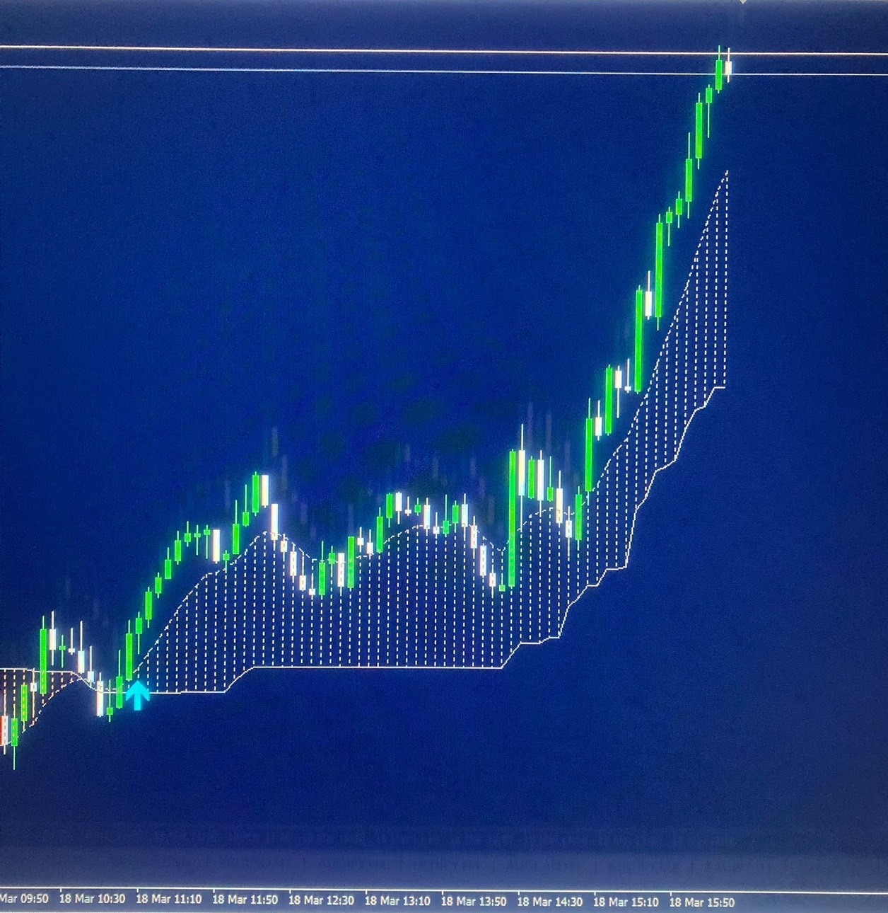
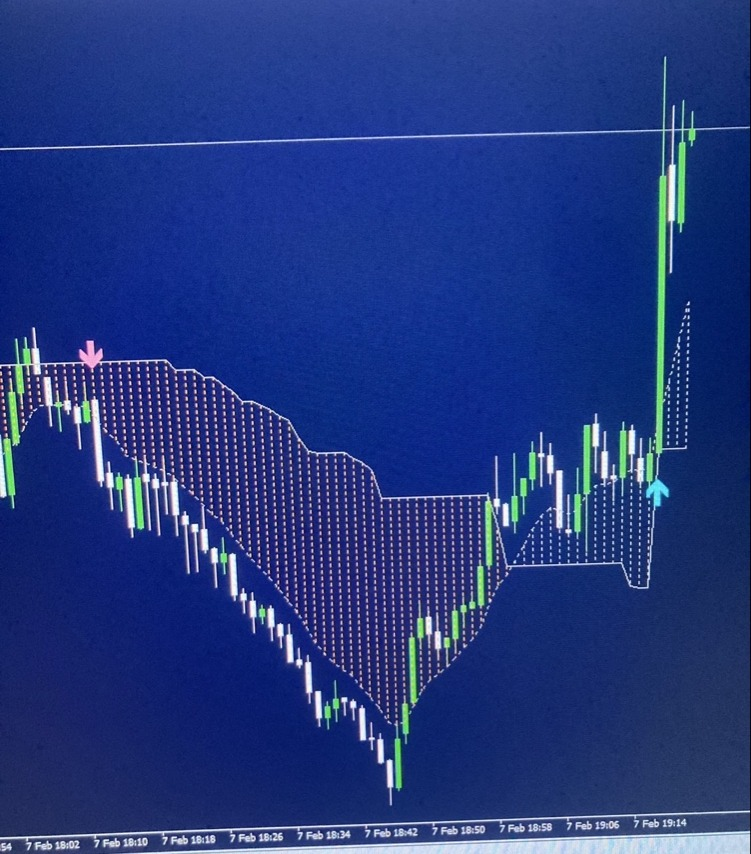
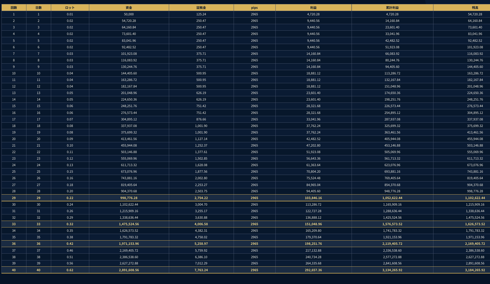

方向が決められない
上がると思えば下がり、売れば上がる。相場の方向に確信を持てず、エントリーを見送ってしまう。
FX-DREAM / MT4 SIGN TOOL
FX-DREAMは、売買方向とエントリー候補をBUY／SELLサインで明確に表示。分析に迷い続けるトレードから、根拠とルールを持って勝率向上を目指すトレードへ導きます。
※84〜92％は過去相場を用いた当方バックテストの条件別結果です。通貨ペア・時間足・検証条件等で変動し、実運用や将来の成果を保証するものではありません。
 BUYSELL
BUYSELL
WHY TRADERS LOSE
買いか、売りか。今入るのか、待つのか。答えを探すほど判断が遅れ、感情でルールを崩してしまう。FX-DREAMは、最も迷いやすい方向とタイミングをチャート上のサインで見える形にします。
上がると思えば下がり、売れば上がる。相場の方向に確信を持てず、エントリーを見送ってしまう。
動き出してから追いかけ、気づけば高値づかみ・安値売り。チャンスの起点を捉えられない。
負けを取り返そうと焦り、根拠の薄いトレードを重ねる。判断基準が毎回変わってしまう。
インジケーターや情報を増やすほど迷いも増える。チャートに張り付いても結論が出ない。
CHANGE YOUR TRADING
売買候補が一目で分かるBUY／SELLの方向を明確な矢印サインで表示
エントリー候補を捉えやすくなる動いた後ではなく、サインを起点に確認
感覚ではなく同じ基準で動ける迷いや焦りを減らし、ルールに沿う
勝率向上を目指す流れができるサイン・取引ルール・資金管理を一体化
SIMPLE LOGIC
やることを増やすのではなく、勝つために必要な確認を絞る。基本ルールはシンプルです。
MT4チャートに表示されたBUY／SELLサインを確認します。
サインの方向と、提供する取引ルールを照らし合わせます。
損切り・利益確定・ロットを定め、勝つためのトレードを行います。
基本は1日1回。 チャートに張り付き続けるのではなく、サインとルールに集中する。
ACTUAL SIGNAL CHARTS
掲載しているのはFX-DREAMの実際のチャート画面です。BUYは水色の上向き矢印、SELLはピンクの下向き矢印で、売買候補の方向とタイミングを明確に表示します。

BUY SIGNALBUYサインが点灯した位置から上昇方向へ。方向だけでなく、どこから相場を見るべきかが明確になります。
 SELL SIGNAL
SELL SIGNALSELLサインが点灯した位置から下落方向へ。買いだけでなく、売りの機会も同じ基準で確認できます。

SELL → BUY下降局面のSELLサインと、その後のBUYサインを同じ画面で確認。相場の方向が変わる局面も視覚的に捉えられます。
MORE SIGNALS
画像を押すと拡大できます
掲載画面はサインの表示例です。相場には騙し・逆行・負けトレードもあり、掲載後の値動きが毎回再現されることを示すものではありません。
BACKTEST RESULT
FX-DREAMのサインを過去相場でバックテスト。通貨ペア・時間足などの条件別に、84〜92％の勝率を確認しています。
条件別に検証通貨ペアや時間足の違いを含む結果
ルール運用の根拠感覚ではなく過去データを参考にできる
勝率向上を目指すサインと取引ルールを一つの基準に
当方バックテスト
条件別参考範囲
CAPITAL MANAGEMENT ROADMAP
サインを受け取って終わりではありません。ロット、利益目標、累計利益、残高の推移をまとめた資金管理ロードマップを付属。次に目指す数字を確認しながら運用できます。
5万円スタートで各段階の目標pipsを順に達成した場合、GOLD試算の18段階目は累計利益325,699.32円。30万円の回収を目指す道筋を、数字で追うことができます。

詳しい考え方と全行程は、納品されるロードマップ教材で確認できます。
ロードマップは一定条件を置いた資金管理上の試算です。スプレッド、約定、損切り、相場状況等により実運用結果は変動し、利益・回収額・必要取引数・期間を保証するものではありません。
ONE COMPLETE PLAN
選ぶプランはひとつ。購入者本人への納品時に、専用ライセンスを発行します。
1名・1ライセンス
サイン＋取引ルール＋資金管理ロードマップ＋LINE相談。勝率向上を目指すために必要な流れを、一式で手に入れられます。
30万円プランを申し込む公式LINEで「FX-DREAM 30万円プラン希望」とお送りください。REFUND GUARANTEE
指定環境・取引ルール・申請手続きなど所定条件をすべて満たした場合、商品代金300,000円を全額返金します。
FREQUENTLY ASKED QUESTIONS
はい。FX-DREAMはBUY／SELLの候補をチャート上に表示するため、方向とタイミングを確認しやすい設計です。付属マニュアルと提供ルールを確認し、資金管理を守ってご利用ください。
84〜92％は、過去相場を用いた当方バックテストの条件別結果です。通貨ペア・時間足・検証条件等で変動します。勝率向上を目指すための根拠ですが、実運用や将来の勝率・利益を保証するものではなく、騙し・逆行・負けも発生します。
基本ルールは1日1回です。回数を増やすより、サインとルールに沿った1回を積み重ねることを重視します。
ツールを稼働させるWindows PCまたはVPSと、MT4環境が必要です。スマートフォンだけではツール本体を稼働できません。
ロードマップの検証基準に合わせるため、Traders Trustを推奨しています。返金保証を利用する場合は、指定するTraders Trust環境が必要です。
申込者と振込名義の照合、本人用ライセンスの発行、納品、サポート、返金時の本人確認に必要なためです。これらの目的に必要な範囲で使用します。
できません。1名につき1ライセンスを発行します。第三者との共有、譲渡、転売、再配布は禁止です。
保証開始前の申請、指定環境、提供ルール、最初の対象40取引、勝ち取引0件、完全な取引履歴など、すべての条件を満たした場合に商品代金30万円を返金します。詳細は返金保証・販売条件をご確認ください。
HOW TO PURCHASE
銀行口座は本ページに掲載していません。公式LINEで商品内容と条件を確認後、購入する方へ個別にご案内します。
「FX-DREAM 30万円プラン希望」と送信してください。
氏名（本名）・納品先メールアドレス・振込名義をお送りください。
内容・条件を確認し、案内された法人口座へお振り込みください。
fx@flh.worksから納品し、本人用ライセンスを発行します。
ロードマップの検証基準に合わせた推奨環境。Traders Trustが提供し、同社MT4で表示・選択できるすべての銘柄に対応します。FX通貨ペアはもちろん暗号通貨を含み、時間足も同MT4で選択できるすべての時間足に対応します。返金保証を利用する場合は指定環境が必要です。
TAKE THE SIGNAL
勝つための方向とタイミングを、チャートに。
FX-DREAMをあなたのトレードへ。